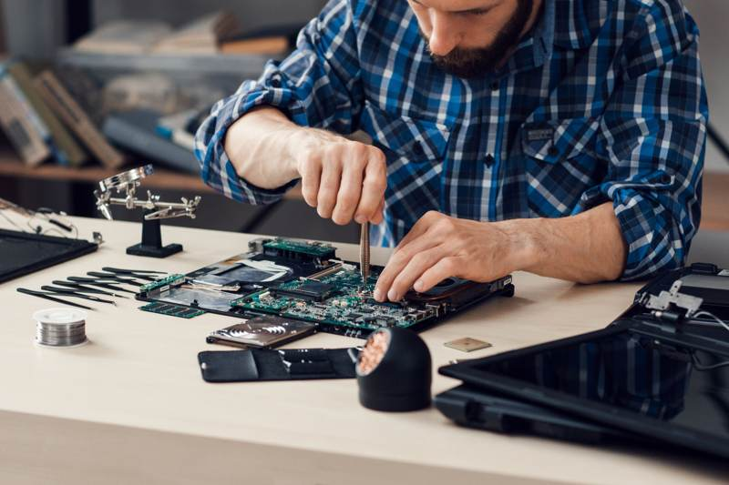

When it comes to computer repairs, UBreakiFix has been a go-to name for many customers. However, it's essential to explore the competitive landscape to understand what other options are available. This analysis delves into some of the top competitors in the computer repair industry, offering insights into their strengths and services.
Geek Squad
Geek Squad, a subsidiary of Best Buy, is renowned for its extensive range of repair services. Known for their in-store, online, and in-home assistance, Geek Squad offers a comprehensive approach to computer repairs. Their technicians are highly trained and can handle a variety of issues, from hardware malfunctions to software glitches.
One of the standout features of Geek Squad is their availability through Best Buy locations across the country. This widespread presence ensures that customers have easy access to support and services. Additionally, their service plans offer continuous support, which can be a cost-effective solution for ongoing technical needs.

CPR Cell Phone Repair
Although primarily known for cell phone repairs, CPR Cell Phone Repair has made significant strides in the computer repair sector. They provide services for both PCs and Macs, catering to a broad range of customer needs. CPR's technicians are skilled in handling various issues, including virus removal and data recovery.
CPR's competitive edge lies in their quick turnaround times and customer-centric approach. By focusing on fast and efficient service, they ensure that customers can get back to their digital lives with minimal downtime. Additionally, CPR often offers free estimates, which can be appealing for budget-conscious customers.
Micro Center
Micro Center is another significant player in the computer repair industry. Known for their extensive product inventory, they also offer robust repair services for all kinds of computing devices. Micro Center's technicians are well-versed in both common and complex issues, providing reliable solutions for any problem.
Their in-store service centers are equipped with the latest tools and technology, allowing them to perform precise diagnostics and repairs. Additionally, Micro Center often runs promotions on their services, making them an attractive choice for those looking for quality repairs at competitive prices.
Apple Authorized Service Providers
For Mac users, Apple Authorized Service Providers (AASPs) offer an excellent alternative to UBreakiFix. These providers are certified by Apple to perform repairs and use genuine parts, ensuring that devices maintain their original quality and performance.
AASPs offer a high level of expertise, particularly when it comes to Apple products. Their technicians undergo rigorous training and certification processes, which assures customers of their proficiency in handling Apple devices. Furthermore, using an AASP for repairs can help maintain warranty coverage on Apple products.
In conclusion, while UBreakiFix remains a popular choice for computer repairs, several competitors offer comparable services with distinct advantages. Whether you prioritize convenience, expertise, or affordability, there is likely a competitor that aligns with your needs. By exploring these alternatives, you can make an informed decision and ensure your computer receives the best possible care.